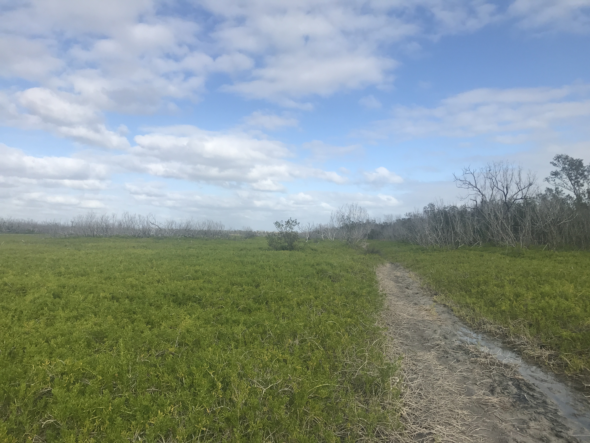

Distance
Distance Elevation
Elevation Observed Wildlife
Observed WildlifeDon't hike this trail. I got ambitious and forced myself to believe that the Everglades must have a good hiking and backpacking opportunity. I was wrong. The park ranger told us the trail was muddy and that we shouldn't do it. Anyway, we did enjoy the beginning of it and all the cool ephiphytes and spanish moss along the trail. From the start it was wet and got even more so as we entered the woods. Luckily, two and a half miles into our hike a gentleman came from the opposite direction, told us he left a few hours before we did, had encountered trail that was up to his knees in water, and turned around. We promptly turned around as well. We had hoped to sleep on a beach in the backcountry, but were left with one option, the walk-in area of the Flamingo Campground at the trailhead, which was quite nice. The following morning we had the time to hang out in the marina and see osprees, manatees, and an enourmous crocodile.





Camping at the waterside walk-in area at Flamingo Campground